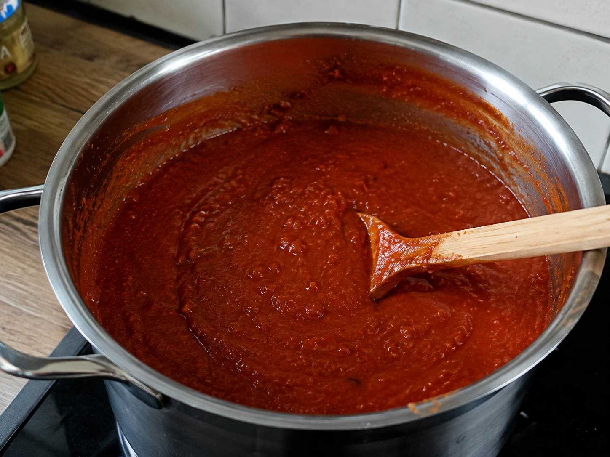

Das macht den Unterschied
Currywurst Sauce

Zutaten
2 kgDosentomaten
500 gZwiebeln
3Knoblauchzehen
2-4 ELOlivenöl
50 gbrauner Zucker
75 mlApfelessig
Gewürze
200 gTomatenmark
1/2gepresste Zitrone
2 TLSalz
1 ELPaprika edelsüß
1 TLIngwer
1 ELSenfkörner
1 Stk.Sternanis
1/4 TLZimt
1/2 TLPiment
1/2 TLschwarzer Pfeffer
1Chilischote
1 ELWorcestershire Sauce
1 TLCurry Pulver
Zubereitung
- Knoblauch und Zwiebeln fein hacken und in etwas Öl glasig anschwitzen.
- Die Hälfte des Tomatenmarks, Paprikapulver und Currypulver hinzugeben und ca. 3 Minuten mitrösten. Mit Apfelessig ablöschen und den Bratensatz lösen.
- Dosentomaten und restliche Gewürze hinzugeben, gut verrühren und bei kleiner Hitze ca. 90 Minuten köcheln lassen.
- Chilischote und Sternanis entfernen und die Sauce fein pürieren. Anschließend nach Geschmack nachwürzen.
- Restliches Tomatenmark einrühren und die Sauce weitere 30–90 Minuten bis zur gewünschten Konsistenz einkochen lassen.
- Die fertige Currysauce heiß in saubere Flaschen oder Gläser abfüllen.